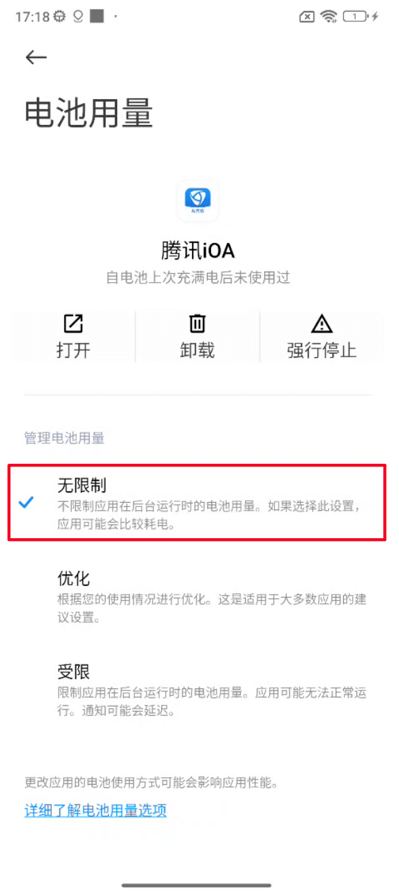
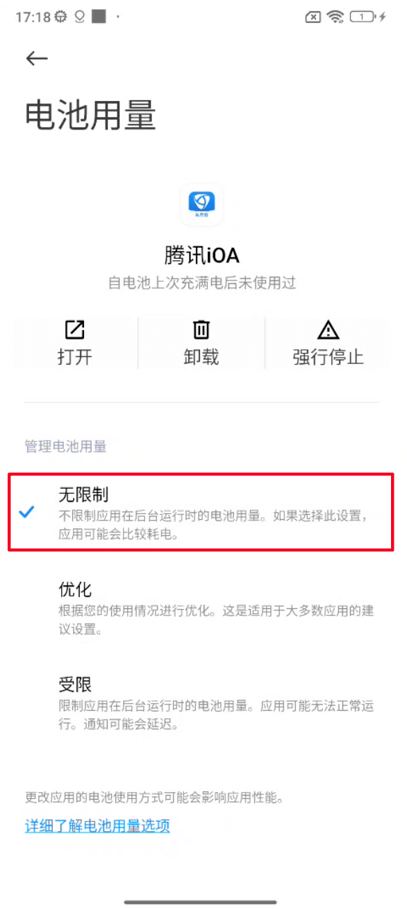

* How to Set Application Background Running on Xiaomi Phones (MIUI 14)
1. [Lock Background Task] (Anti-kill)
Open the iOA interface —— Return to the desktop —— Swipe up from the bottom of the screen (click the multitasking button if there is a navigation bar) —— Enter the background task page —— Find iOA and long press —— Click the lock icon —— A lock symbol appears at the top indicating successful locking.


2. [Close Memory Expansion]
After this feature is enabled, the system will provide an additional 3GB of running memory.
Although the official statement does not indicate that memory expansion has a clear phenomenon of killing the background, according to feedback from netizens, after this feature is closed, the phenomenon of killing the background is much less, and it is highly suspected that the background process is saved in the expanded memory.
Open system settings —— More settings —— Memory expansion —— Close [Memory Expansion] and restart the device


3. [Application Management] Do Not Restrict Background Running
Long press the iOA icon on the desktop —— Enter application information —— Battery and performance —— Modify battery usage page to unrestricted
 

4. [Power Saving Settings]
Xiaomi Phone Manager —— Power saving and battery —— Top right corner settings


(1) Set "Never" for memory cleanup after screen lock
(2) Application smart power saving —— iOA —— Change backend configuration to unrestricted